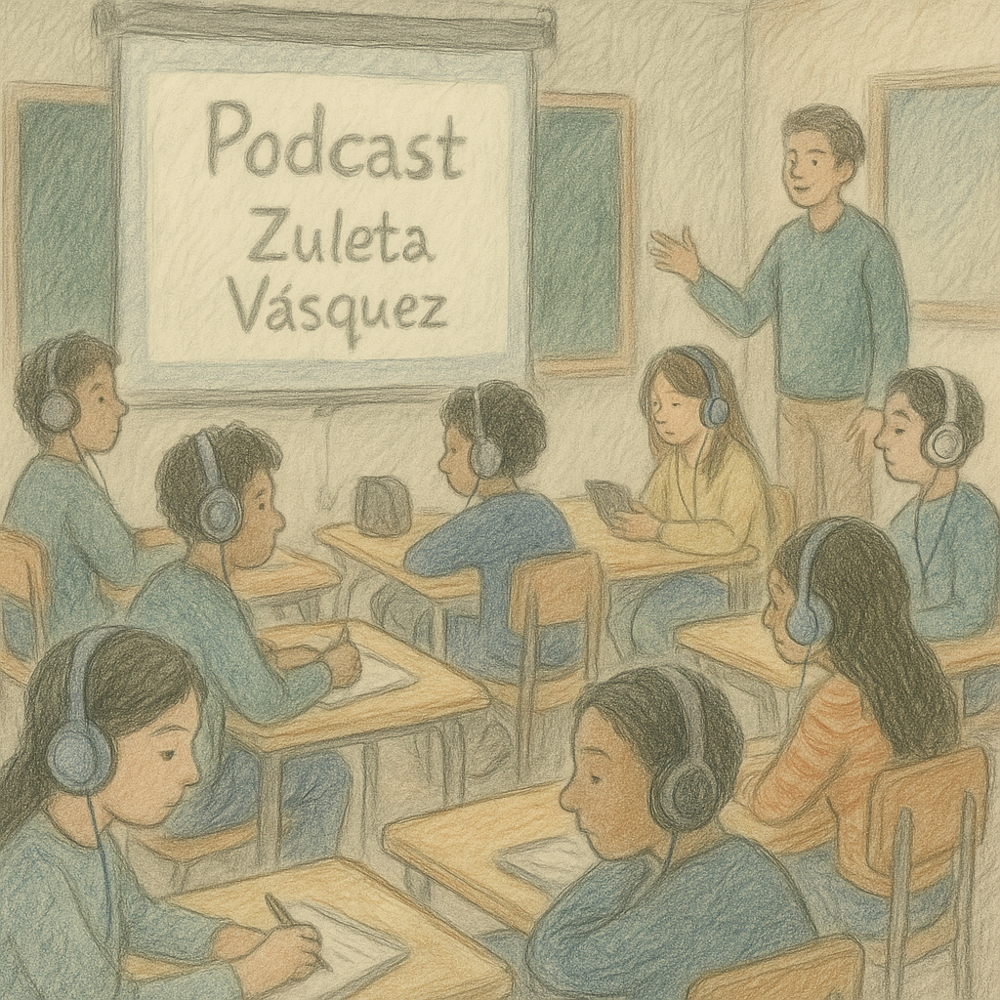

🕒 Primer bloque (40 minutos) – Escucha activa del podcast educativo
Objetivo: Escuchar directamente a la autora para profundizar en su mirada poética y recibir consejos de escritura, conectando así la experiencia lectora con la creación personal.

Actividad:
Escucha colectiva de un podcast educativo grabado especialmente junto a la poeta antofagastina Zuleta Vásquez.
La cápsula propone una experiencia de inmersión poética que combina paisaje sonoro, lectura de poemas en la voz de la autora y momentos de interacción guiada. A lo largo del podcast, los estudiantes son invitados a imaginar, reflexionar y responder breves preguntas que estimulan la percepción sensorial y la interpretación personal de los textos.
Durante la conversación, Zuleta Vásquez comparte fragmentos de su obra y responde preguntas sobre su proceso de creación literaria, especialmente en torno al uso de las metáforas y la relación entre poesía, emociones e identidad. Esta instancia permite establecer un puente entre la interpretación que realizan los estudiantes y la voz viva de la autora, acercando la poesía contemporánea a la experiencia del aula.
La actividad busca favorecer la escucha atenta, la interpretación poética y la indagación personal, invitando a los estudiantes a explorar sus propias emociones y a comenzar la creación de imágenes y metáforas que luego podrán desarrollar en las actividades posteriores. La duración del podcast es de 12 minutos.
Si tienes problemas para reproducir el audio, puedes descargar el podcast aquí:
🔽 Descargar podcast "Festival poético en el aula con Zuleta Vásquez"
Recomendaciones para la implementación:
Considerar previamente el formato de reproducción del podcast:
¿Se escuchará de forma colectiva a través de parlantes?
¿Cada estudiante escuchará desde su propio dispositivo con audífonos?
¿Se organizarán en parejas para compartir audífonos?
Esto dependerá de los recursos disponibles en el aula y de las características del colegio.
Preparar el ambiente de escucha:
- Atenuar las luces,
- Disponer los asientos en círculo o en una distribución flexible,
- O bien realizar la actividad al aire libre si el entorno lo permite.
Plenario de cierre (5–10 minutos): La docente guía una conversación abierta con el grupo a partir de estas preguntas:
- ¿Qué dijo Zuleta que te llamó la atención?
- ¿Coincide algo de lo que sentiste con lo que ella expresó?
- ¿Qué consejos te parecieron útiles para tu propio proceso de escritura?
- ¿Qué descubriste de su forma de crear poesía?
🕒 Segundo bloque (40 minutos) – Escritura personal poética
Objetivo: Que los y las estudiantes conecten con su mundo interior y den forma a una expresión poética personal, explorando su identidad, emociones y experiencias a través de la escritura creativa, en un ambiente de respeto, contención y libertad expresiva.
Actividad:

Se abre un espacio de tiempo y contención para que cada estudiante escriba una estrofa o un breve poema personal, inspirado en la pregunta:
¿Quién soy yo?
¿Qué tengo dentro que necesita ser dicho o escrito?
Se puede sugerir salir del aula: mirar los cerros, el mar o sentarse en el patio si el entorno lo permite, buscando contacto con un paisaje propio o simbólico.
Durante este proceso, también se invita a los y las estudiantes a explorar otras formas de expresión complementarias: pueden acompañar sus palabras con dibujos, símbolos, garabatos o fotografías propias que les ayuden a representar lo que sienten o lo que escriben. La ilustración o imagen puede ser una forma de traducir visualmente una metáfora, una emoción o una idea poética. Estas representaciones también pueden incorporarse en su diario de interpretación y escritura.
El o la docente acompaña de forma cercana, fomentando el respeto, la intimidad creativa y validando todos los tipos de escritura que emerjan, ya sean breves, fragmentarias, visuales o verbales.
Al finalizar la clase, cada estudiante entrega su texto (y/o ilustración) al docente o lo conserva en su diario para revisión posterior. La corrección será mínima, centrada en aspectos gramaticales y de forma, preservando la autenticidad de la voz poética.
✍️ Registro del proceso en diario personal
Durante esta etapa, se sugiere que cada estudiante utilice un diario de interpretación y escritura para registrar sus reflexiones, emociones y avances. Este diario puede ser su cuaderno habitual de Lengua y Literatura, un cuaderno nuevo exclusivo para esta secuencia o un documento digital, según lo determine la docente.
En este espacio, el o la estudiante deberá anotar:
- Sus respuestas personales tras la escucha del podcast con Zuleta Vásquez: qué le llamó la atención, qué sintió identificado/a, qué consejo quiere aplicar.
- Las primeras ideas que surgen para su propio autorretrato poético.
- Borradores, frases sueltas, imágenes mentales, emociones, símbolos o palabras que quiera conservar para su texto.
- El poema o estrofa final, una vez escrita.
Es importante fomentar la libertad creativa: si algún estudiante desea escribir más de un poema, extenderse en su reflexión o continuar escribiendo en casa, puede hacerlo. El diario funciona como testigo y herramienta del proceso de creación poética, más que como un espacio evaluativo cerrado.